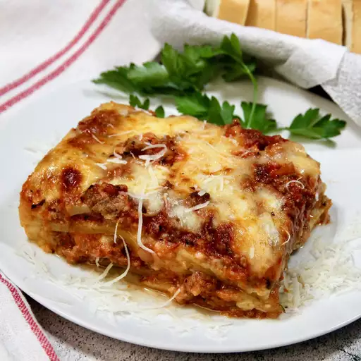

Lasagna Recipe

Homemade lasagna isn't as hard to make as it seems. Don't be intimidated by all the layers of delicious Italian flavor — try this homemade lasagna recipe today!
Ingredients
- 1/2 pound ground pork
- 1/2 pound ground beef
- 1/2 cup diced onion
- 1 can crushed tomatoes
- 8 ounce of tomato sauce
- 2 tablespoons chopped fresh parsley
- 1 clove of garlic crushed
- 1/8 teaspoon white sugar
- 1 1/2 teaspoon of salt
- 1/4 teaspoon ground black pepper
- 1/2 teaspoon of dried oregano
- 1 1/2 teaspoon dried basil
- 1 box of lasagna sheets
- 1 pound small-curd cottage cheese
- 3/4 cup grated parmesan
- 1 package shredded Mozzarella Cheese
- 3 large eggs
- 2 teaspoons salt
Directions
Step 1
-
Combine pork and ground beef in a large, deep skillet over medium-high heat; cook and stir until browned and crumbly, 5 to 7 minutes. Add onion and cook until translucent, about 5 minutes.
Step 2
-
Stir in crushed tomatoes, tomato sauce, 1 tablespoon fresh parsley, garlic,
basil, salt, oregano, and sugar. Reduce heat to medium-low and simmer, stirring occasionally, for 30 minutes.
Step 3
- While the sauce is simmering, bring a large pot of lightly salted water to a boil. Cook lasagna sheets in the boiling water, stirring occasionally, until tender yet firm to the bite, 8 to 10 minutes. Drain and set aside.
Step 4
- While the noodles are cooking, preheat the oven to 375 degree F(190 degrees C).
Step 5
- Mix cottage cheese, parmesan cheese, eggs, remaining 1 tablespoon fresh parsley, salt, and pepper in a large bowl until combined.
Step 6
- Assemble lasagna: Spread a spoon or two of sauce over the bottom of a 9X13-inch baking dish just to coat it. Place two layers of noodles over the sauce to cover. Layer with 1/2 of cheese mixture, 1/2 of the remaining sauce, and 1/2 mozzarella cheese. Repeat layers once more using the remaining noodles, cheese mixture, sauce, and mozzarella. Cover the baking dish with aluminum foil.
Step 7
- Bake in the preheated oven for 30 to 40 minutes. Remove the foil and bake until cheese is golden brown, 5 to 10 more minutes.
Step 8
- Remove from the oven and let it stand for 10 minutes before cutting and serving.